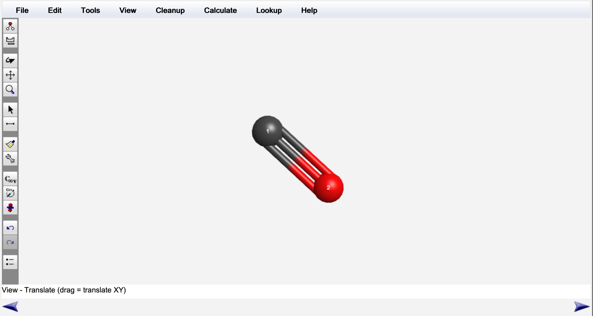
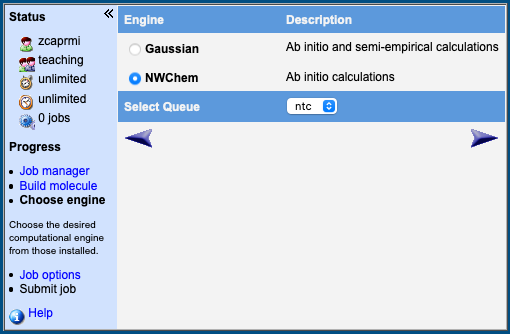
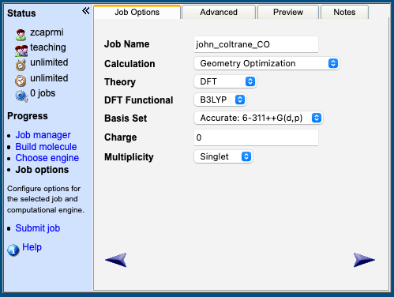
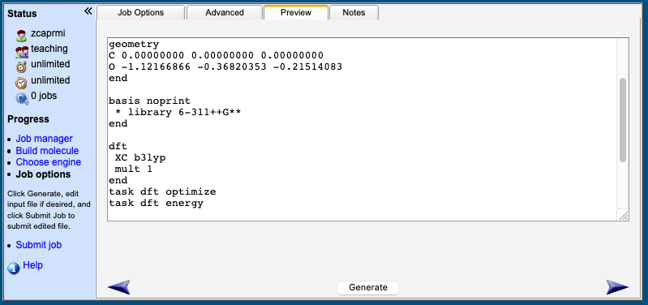

Prof Ben Slater (b.slater@ucl.ac.uk), Prof Graham Worth (g.a.worth@ucl.ac.uk), Dr Miguel Rivera (miguel.rivera@ucl.ac.uk)
In this module you will learn how to use quantum chemistry computer software to get insight into the reactions of simple molecules. You will mainly use density functional theory (DFT) in your work, now the most commonly used quantum mechanical approach for routine modelling of isolated molecules, liquids and crystals. It is not important to understand the detailed mathematics behind the theory of DFT, but you should familiarise yourself with the basic tenets of this approach – students who have opted to do CHEM0028 will have already encountered DFT and key parts of the course are on the Moodle page. Suggested reading is given at the end of lab book.
In this module you will:
The module will be assessed by two written reports worth 50% each, [CONSULT WITH BEN AND GRAHAM]
Please write a word processed report giving answers to the questions given at the end of this document. Give the total energies for each of the structures in your calculations and the associated filename. Please present your data in a clear manner giving appropriate labels and units. In many cases, quoting the relative energy is more instructive than the absolute energies, so present that where it is meaningful. The computer you will be using for your calculations is not backed up. I advise copying your important input and output data to your account under Desktop@UCL and/or backing up your data on your home computer. The latter can be done using ‘sftp’ – please speak to me if you want to know how to do this.
Do try and solve the problem yourself first. If your problem is about WebMO, the answer may be in the documentation. If you are stuck, ask for help on Moodle, or from one of the instructors by email at b.slater@ucl.ac.uk, g.a.worth@ucl.ac.uk or miguel.rivera@ucl.ac.uk.
You will be using a “UNIX” (unix is a ubiquitous computer operating system) based computer called NTC (New Teaching Cluster) to carry out your calculations, which you can use with Desktop@UCL or with the UCL VPN on your home machine. Once you have set up your account, you will use several pieces of software to actually run calculations:
You should be in.
As a first example, we will study carbon monoxide using WebMO.
The molecule looks ready for calculation:




You have now asked the computer cluster to optimise the geometry of the CO molecule. You should be sent back to the Job Manager page.
The input file can be a little cryptic, here it is with added annotations (marked by “#” signs):
title "CO"
echo
charge 0 # Charge on the molecule
geometry
C 0.00000000 0.00000000 0.00000000 # Atom type and Cartesian coordinates
O -1.12166866 -0.36820353 -0.21514083
end
basis noprint
* library 6-311++G** # Basis set type
end
dft
XC b3lyp # DFT recipe
mult 1 # Spin state
end
task dft optimize # Calculation instructions
task dft energy
property
dipole
mulliken
end
task dft property
You may have to tinker with this later.
After a short wait, you should see your job labeled as having a “Complete” status in the Job Manager. You can inspect the results by pressing the magnifying glass next to it (). The screen should appear the same as when you built the molecule, and you will be able to find plenty of information which will let you:
input.inp). The full output is called output.out. It is long and full of superfluous detail, but for instance you can get the total energy at each step of the calculation by looking for the words “Total DFT energy” (the equilibrium energy is the final one).Note: Since you are back in the “Build Molecule” menu, if you wish to carry out a new calculation starting with this molecular geometry, you can follow the steps of the previous section by clicking the bottom right arrow.
NWChem is a very powerful piece of software—we shall use only a small fraction of its functionality. Here is a summary of the types of calculations you will carry out:
task dft energy : this instructs NWchem to evaluate the total energy of the moiety according to the DFT prescription.task dft optimize : this instructs NWchem to minimize the total energy of the moiety by adjusting the coordinates of the atoms within the moiety.task dft frequency : this instructs NWChem to evaluate the vibrational frequencies (for direct comparison with experimental e.g. IR spectra) of the moiety. This is quite a computationally expensive calculation often conducted when the optimum structure has been identified.task dft saddle : this instructs NWchem to identify the closet stationary point on the potential energy surface by adjusting the coordinates of the atoms within the moiety.As a second example, we will investigate the water molecule. To calculate the energy at an arbitrary energy, we may use the following input file (remember that the comments after the “#” sign are ignored by NWChem):
geometry units angstrom
O 0.0 0.0 0.0 # Here, O is the element label, 0.0 0.0 0.0 are the
H 0.0 1.0 0.0 # coordinates with respect to an arbirary origin.
H 0.0 0.0 1.0 # Note the orientation of the molecule doesn't matter.
end
basis
O library 6-311++G** # Basis set
H library 6-311++G**
end
dft
xc b3lyp # DFT recipe
end
print low # Print out only essential information
task dft energy # Type of calculationRun this calculation through WebMO (you will most likely have to edit the input file). Once it is finished, mark down the total energy, it should be near -76.45 Hartree. You have just calculated the energy of a water molecule, a so-called single point energy because it is the total energy of a moiety at one particular conformation.
The guess of the water structure in the input file was pretty poor. The H-O-H angle was estimated to be 90°, and so we expect this structure to be relatively high in energy. We now need to determine what the minimum energy structure is for our simulation settings. To do this we need to ‘geometry optimise’ the structure. In geometry optimisation, the package tries to minimise the force on all atoms in the molecule, (which is the derivative of the total energy with respect to the coordinates). The program goes through an iterative minimisation procedure to reduce the force on all atoms to approximately zero.
To optimise the geometry, change the line task dft energy to task dft optimize in your input file, and rerun the calculation. When inspecting the output, you should see an H-O-H angle of about 105° and an energy nearer to -76.46 Hartree. The water molecule has therefore stabilised by 18.52 kJ mol\(^{-1}\).
Due [DISCUSS WITH BEN AND GRAHAM]
Unless otherwise stated, use the DFT recipe and basis set in the first example input. That is B3LYP/6-311G++(d,p).
Note that all energies in NWChem are in units of Hartrees. Please convert these energies to kJ mol\(^{-1}\) in your report by multiplying your energies by 2625.5.
Watch out for in your input. It is easy to get zero and the letter O mixed up, similarly the number one and the letter l. To make sure that NWChem has run to completion without error, check the bottom of the output file, you should see a list of authors.
Unless otherwise stated, no starting geometries are suggested for these calculations below. Use your chemical intuition, web resources (wok.mimas.ac.uk–which requires your UCL ID and password and even trigonometry to set up starting geometries for your models. Whenever possible, use the cleanup tool before optimising geometries, you will save everyone a lot of time.
Calculate the bond length and total energy of spin polarised, paramagnetic O\(_2\) (↑↑) and diamagnetic O\(_2\) *(↑↓). Before the task command, you need to tell the program about the spin state you want with the keyword mult:
dft
mult 1 or 2 or 3 etc.
endmult is the net spin of electrons in the system in terms of the integer numbers of electrons plus one ($2S+1).
Note: You must also edit the input to break the symmetry of this molecule (which is automatically and used by NWChem to reduce computational expense), to prevent a bogus result, by adding the symmetry c1 keyword as below:
geometry
O 0.0 0.0 0.0
...
symmetry c1
endWhat is the predicted electronic ground state of O\(_2\)? Is your predicted electronic state of Oxygen that which is found experimentally at room temperature and ambient pressure? Comment on the bond length you predicted in comparison to experiment.
In these calculations, although you request a particular spin state, the program does not constrain the spin so check that the spin you requested has been preserved by looking for ‘S2’ at the end of the output, which is the total spin.
You may find that the calculation finishes without identifying a minimum energy structure—this will be apparent from your output file as an errer will be reported. By default, NWChem has 20 attempts to identify the minimum energy structure. To increase the number of allowed attempts, insert the following into your input before the task directive which increases the number of attempts to 50:
driver
maxiter 50
endO\(_{2(g)}\) → 2O\(_{(g)}\)
Think about the spin states again. Locate the experimental dissociation energy from the literature (e.g. the CRC Handbook of Chemistry and Physics) and comment on how well your calculation has reproduced the experimental energy.Calculate the equilibrium/optimised geometry for the water monomer andthen calculate the vibrational frequenceis of water. How many frequencies do you expected and why? Using the WebMO application to help you, sketch and report the vibrational modes associated with each of the non-zero frequencies. The experimentally determined water frequences from IR can be found here.
Your frequenceis are considerably larger than experiment—can you offer an explanation?
In this calculation, you are using time independent DFT, within the Born-Oppenheimer approximation, so what is the effective temperature at which this calculation takes place?
You will also find the zero point energy reported in this calculation. Report this quantity and show how one could arrive at this number using the frequencies reported in the output.
Calculate and plot the inversion barrier height for water and ammonia. You will need to calculate the minimum energy structure and guess and optimise the transition state geometry using the saddle method you encountered earlier. Depending on your initial guess, you may find it efficient to minimise your initial guess and then use the saddle mode to confirm that you have obtained a stationary point. Saddle looks for maxima rather than minima on the potential energy surface. Explain how one could distinguish between the minimum energy structure and the stationary point by inspecting the vibrational frequencies.
Are your frequencies consistent with a minimum and a stationary point? (Hint the vibrational frequencies are proportional to the second derivatives of the energy).
Based on the energies you calculate and taking into account the thermal energy of gaseous molecules, at what temperatures would the barriers be overcome?